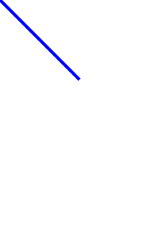

Программа для построения гистограммы из ЛР № 1 состоит из одной функции main() на более чем 100 строк, из-за чего в ней неудобно ориентироваться. Необходимо выделить части программы в функции:
Сколько параметров у функции? Один — количество вводимых чисел. Сколько и каких значений функция возвращает? Одно значение — вектор из действительных чисел. Что функция позволяет сделать? Ввести числа (input numbers). Таким образом, функция имеет вид:
vector<double>
input_numbers(size_t count) {
vector<double> result(count);
for (size_t i = 0; i < count; i++) {
cin >> result[i];
}
return result;
}Современный C++ (C++11 и выше) позволяет просто возвращать из функции вектор, и это будет работать эффективно, каков бы ни был его размер.
В основной программе (в функции main()) ввод чисел заменяется вызовом новой функции:
Выбран ли тип переменной numbers наилучшим образом?
Можно заметить, что в дальнейшем numbers не изменяется, следовательно, можно сделать ее константной:
Теперь тип numbers занимает половину строки, что может быть неудобно читать. Можно заметить, что тип numbers обязан совпадать с типом возвращаемого значения функции input_numbers(), то есть избыточен. В современном С++ есть способ указать компилятору вывести тип переменной numbers из выражения, которое ей присваивается:
Ключевое слово auto не вводит новый тип. Переменная numbers по-прежнему является const vector<double>, просто это записано короче, так как компилятору это известно без явного указания. Стала ли программа более читаемой? Ответ неоднозначен. Код сократился, но теперь из него не очевидно (человеку), каков тип numbers; с другой стороны, читателю может и не быть важно, как представлены numbers — достаточно того, что там числа (это ясно из названия функции). Вывод: использовать auto следует там, где это сокращает код без сокрытия важных подробностей.
При поиске минимума и максимума результата два — классический пример, когда можно результаты функции передать не через возвращаемое значение, а через параметры. Типом выходных параметров не может быть double, потому что это тип значений, и параметры этого типа будут отдельными переменными, которые существуют в пределах функции, а следовательно, после ее вызова их нельзя будет считать. Остаются либо ссылки, либо указатели.
Если выбрать ссылки, их всегда придется передавать в функцию, изнутри которой они будут доступны без особого синтаксиса:
void
find_minmax(vector<double> numbers, double& min, double& max) {
min = numbers[0];
// ...
}
// ...
double min, max;
find_minmax(numbers, min, max);При использовании указателей их потребуется разыменовывать в функции, а при вызове нужно будет передавать не переменные, а их адреса:
void
find_minmax(vector<double> numbers, double* min, double* max) {
*min = numbers[0];
// ...
}
// ...
double min, max;
find_minmax(numbers, &min, &max);find_minmax() в любом варианте, добейтесь компиляции и корректной работы программы.Оптимально ли выбран тип входного параметра numbers? Во-первых, изменять его не требуется, он может быть константным. Во-вторых, поскольку он не объявлен ссылкой или указателем, это отдельная переменная, которая получает значением копию вектора, который передается в функцию. Однако копия не нужна. Итого выгоднее использовать константную ссылку: const vector<double>& numbers.
Выделите поиск минимума и максимума в функцию find_minmax(). Типы всех парамтеров выберите на свое усмотрение.
Выделите расчет количества чисел в столбцах гистограммы в функцию make_histogram().
Выделите отображение гистограммы в функцию show_histogram_text().
Итоговая функция main() принимает вид (за вычетом оформления):
size_t number_count;
cin >> number_count;
const auto numbers = input_numbers(number_count);
size_t bin_count;
cin >> bin_count;
const auto bins = make_histogram(numbers, bin_count);
show_histogram_text(bins);Можно видеть, что функциями фактически выделены блоки ввода данных, обработки данных и вывода результатов. Ввод данных частично находится вне функции input_numbers(), потому что иначе она оказалась бы слишком специфичной, «заточенной» под программу. Функция же ввода массива может быть полезной во многих случаях.
Помимо выделения блоков кода, функции определяют взаимодействие между частями программы и скрывают реализацию этих частей. Через типы параметров функций и их возвращаемых значений фиксируется, какой информацией обмениваются части программы (интерфейсы этих частей, не путать с интерфейсом пользователя). При грамотной декомпозиции интерфейсы сохраняются (иногда дополняясь) при модернизации частей программы.
Изображения в формате SVG представляют собой текстовые файлы, в которых перечислены геометрические фигуры (линии, прямоугольники и прочие) и их свойства (положение, размер, цвет и другие). Кроме самих геометрических фигур, файл содержит заголовок и окончание.
Например, такой файл SVG описывает изображение размером 200×300 точек с линией из точки (0, 0) в точку (100, 100) синего цвета толщиной 4 точки:
<?xml version='1.0' encoding='UTF-8' ?>
<svg width='200' height='300' viewBox='0 0 200 300' xmlns='http://www.w3.org/2000/svg'>
<line x1='0' y1='0' x2='100' y2='100' stroke='blue' stroke-width='4'/>
</svg>Здесь строка <line... /> описывает линию. Выше нее находится заголовок файла, ниже нее — окончание файла.
Система координат SVG отличается от математической: ось Y направлена вниз, то есть точка (0,0) находится в верхнем левом углу. Координаты в SVG действительные, то есть может быть точка (0.5, 3.14).
Кроме линий, SVG поддерживает множество элементов, среди них:
<text x="20" y="35">anything you want</text>: текст «anything you want», левый нижний угол которого в точке (20,35);<rect x="0" y="0" width="100" height="200" />: прямоугольник 100×200 с верхним левым углом в точке (0,0).Требуется переделать вывод гистограммы на формат SVG.
С точки зрения SVG, гистограмма представляет собой элементы <text> с подписями столбцов и элементы <rect> напротив них — столбцы гистограммы.
Вывод отдельных элементов SVG (заголовка, окончания, текста, прямоугольника) стоит оформить в виде функций, который будут принимать параметры геометрии и печатать соответствующий текст. Весь вывод гистограммы в SVG реализуем в функции show_histogram_svg(), интерфейс которой не отличается от show_historgam_text(), вызов которой заменим вызовом новой функции.
Для проверки работы программы можно направлять ее стандартный вывод в файл с расширением SVG и просматривать его в браузере.
Отработаем цикл модификации и проверки программы на примере пустого изображения. Вот готовые функции вывода заголовка и окончания SVG:
void
svg_begin(double width, double height) {
cout << "<?xml version='1.0' encoding='UTF-8'?>\n";
cout << "<svg width='" << width << "' height='" << height "' "
<< "viewBox='0 0 " << width << " " << height << "' "
<< "xmlns='http://www.w3.org/2000/svg'>\n";
}
void
svg_end() {
cout << "</svg>\n";
}Обратите внимание на пробелы в строках, например, перед закрывающей кавычкой во фрагменте "viewBox='0 0 ". Также обратите внимание на использование одинарных кавычек. Двойные кавычки ограничивают в C++ строковые литералы; одинарные кавычки внутри них выводятся «как есть» в результирующую строку. Путаница кавычек или отсутствие некоторых пробелов сделает SVG некорректным.
Пусть начальная реализация графического вывода гистограммы всегда выводит пустое изображение фиксированного размера:
Заменим вызов show_histogram_text(bins) вызовом show_histogram_svg(bins).
Создать файл изображения можно так:
В браузере marks.svg открывается из меню Файл → Открыть… Отобразится пустая страница (пустой рисунок). Можно нажать Ctrl+U или пункт «Исходный код страницы» в контекстном меню любого места страницы, чтобы увидеть результирующий код SVG.
Напишите функцию для вывода текста в SVG, которая принимает координату по горизонтали (left), координату нижнего края текста по вертикали (baseline) и сам текст:
Для проверки выведем высоту первого столбца гистограммы:
void
show_histogram_svg(const vector<size_t>& bins) {
svg_begin(400, 300);
svg_text(20, 20, to_string(bins[0]));
svg_end();
}Функция to_string() преобразует значения разных типов в строки.
Чтобы проверить модифицированную программу, её нужно запустить повторно:
После повторного запуска программы открытый в браузере файл можно обновить клавишей F5. На странице должен быть виден текст «2». Если в файле ошибка, он не отобразится. В этом случае нужно просмотреть код страницы на предмет ошибок в SVG, исправить код программы, перезапустить ее и проверить результат.
Напишите функцию для вывода прямоугольника в SVG:
Для проверки выведем первый столбец гистограммы справа от подписи к нему:
Текст выводится в координатах (20, 20), смещение левого края столбца 50 (оно же — ширина подписей), а высота столбца 30. Эти числа подобраны так, чтобы элементы гистограммы не накладывались друг на друга, но они разбросаны по коду и их смысл неясен.
Прямо внутри функции show_histogram_svg() заведем константы:
const auto IMAGE_WIDTH = 400;
const auto IMAGE_HEIGHT = 300;
const auto TEXT_LEFT = 20;
const auto TEXT_BASELINE = 20;
const auto TEXT_WIDTH = 50;
const auto BIN_HEIGHT = 30;Логика вывода гистограммы следующая: каждая корзина выводится так же, как первая, но к вертикальной координате добавляется смещение — высота столбца:
double top = 0;
for (size_t bin : bins) {
const double bin_width = 10 * bin;
svg_text(TEXT_LEFT, top + TEXT_BASELINE, to_string(bin));
svg_rect(TEXT_WIDTH, top, bin_width, BIN_HEIGHT);
}«Магическая константа» 10 пока сохраняется, потому что логика расчета ширины прямоугольника еще будет модифицироваться.
Черная гистограмма не слишком эстетична или экономична при печати. За цвет линий в SVG отвечает атрибут stroke, а за цвет заливки — fill. Можно задать один из стандартных цветов или выбрать цвет в формате #RRGGBB из палитры. Пример прямоугольника с красными границами и бледно-розовой заливкой:
Доработайте функцию svg_rect() для указания цвета линий и заливки:
Измените цвета вывода и проверьте работу программы.
Цвета элементов нужно задавать не всегда, а в текущей реализации у функции svg_rect() шесть параметров, два из которых отвечают за цвет. Можно было бы перегрузить функцию:
void svg_rect(double x, double y, double width, double height);
void svg_rect(double x, double y, double width, double height,
string stroke, string fill);Однако в этом случае пришлось бы в каждой функции писать похожий код. В данном случае выгоднее применить значения параметров по умолчанию:
void svg_rect(double x, double y, double width, double height,
string stroke = "black", string fill = "black");Значения по умолчанию указываются только один раз, обычно в определении функции (если объявление и определение отделены). Новая версия svg_rect() работает так:
svg_rect(0, 0, 100, 200); // svg_rect(0, 0, 100, 200, "black", "black");
svg_rect(0, 0, 100, 200, "red"); // svg_rect(0, 0, 100, 200, "red", "black");
svg_rect(0, 0, 100, 200, "blue", 4);svg_rect().Ранее для тестирования программы применялось перенаправление ввода и вывода. Такое тестирование называется функциональным. Однако функционального тестирования недостаточно для больших программ. Предположим, большая программа перестала выдавать правильный результат — как найти место ошибки? Необязательно это последнее изменение: возможно, другая часть и ранее работала неверно в некоторых случаях, и последняя правка лишь привела к такому случаю.
Модульное тестирование (unit testing) проверяет не работу всей программы, а работу отдельных ее компонент, например, отдельных функций. Модульные тесты пишутся программистами для собственного кода (функциональные тесты могут писаться или проводятся вручную другими специалистами).
Модульный тест — это отдельная программа, которая изолированно проверяет части кода основной программы. Если желательно протестировать части сложного алгоритма, эти части должны быть оформлены в виде отдельных функций (говорят: код должен быть тестируемым).
Написать модульный тест для функции поиска минимума и максимума.
Функция find_minmax() находится в основном (и единственном) модуле main.cpp. Для использования функции в других программах нужно вынести ее код в отдельный модуль. Модулем в практике C++ называется заголовочный файл (*.h) с объявлениями функций и файл реализации (*.cpp) с их определениями.
При помощи меню File → New → File… добавьте к проекту заголовочный файл (C/C++ header). Он должен быть расположен в каталоге проекта:
Filename with full path: C:\lab03-histogram\histogram.h
Заготовка файла включает «стража включения» (см. лекции):
Можно заменить его на более простой вариант #pragma once или писать код в этом файле между #define и #endif.
find_minmax() в histogram.h.Помимо самой функции в начало histogram.h (под #pragma once) нужно добавить подключение библиотеки векторов и стандартного пространства имен:
Если теперь попытаться собрать программу, это не удастся: в файле main.cpp функция find_minmax() теперь отсутствует. Необходимо подключить файл histogram.h (в самом начале файла main.cpp):
Обратите внимание на использование кавычек вместо угловых скобок: кавычки означают, что путь к файлу *.h написан относительно файла с #include, а угловые скобки предписывают искать включаемый файл по определенным в настройках путям.
При помощи меню File → New → File… добавьте к проекту файл реализации (C/C++ source). Необходимые настройки:
Filename with full path: C:\lab03-histogram\histogram.cpp
Add file to active project in build target(s) — нажать All.
В histogram.cpp подключите histogram.h.
Перенесите определение функции find_minmax() в histogram.cpp.
Оставьте в histogram.h от функции find_minmax() только объявление:
Если при выделении функции find_minmax() были использованы указатели, а не ссылки, объявление нужно соответствующим образом скорректировать.
При помощи меню File → New → Project… создайте новый проект типа Empty project. Необходимые настройки:
Project title: lab03-test
Folder to create project in: C:\lab03-histogram
Project filename: lab03-test.cbp
Resulting filename: C:\lab03-histogram\lab03-test.cbp
Дважды щелкните по проекту lab03-test, чтобы сделать его активным.
Из контекстного меню проекта lab03-test выберите пункт Add files… и добавьте к проекту histogram.h и histogram.cpp. В открывшемся диалоге Select the targets this file should belong to: проставьте все флажки.
При помощи меню File → New → File… добавьте к проекту lab03-test файл реализации (C/C++ source). Необходимые настройки:
Filename with full path: C:\lab03-histogram\test.cpp
Add file to active project in build target(s) — нажать All.
Файл test.cpp представляет собой полноценную тестирующую программу, в которой подключен тестируемый модуль, библиотека с assert() (см. лекцию) и присутствует функция main():
Первый тест будет проверять простой случай массива положительных чисел:
#include "histogram.h"
#include <cassert>
void
test_positive() {
double min = 0;
double max = 0;
find_minmax({1, 2, 3}, min, max);
assert(min == 1);
assert(max == 3);
}
int
main() {
test_positive();
}Соберите программу-тест, запустите ее и убедитесь, что она завершается без ошибок, то есть тест проходит.
Замените проверку max == 3 на max == 4. Соберите и запустите программу, чтобы наблюдать образец вывода при провале теста. Верните правильную проверку.
Добавьте новые тесты (имена придумайте) на такие случаи:
Убедитесь, что все тесты проходят.
Добавьте тест на обработку пустого массива и проверьте, проходит ли он.
Если find_minmax() в своем начале обращается к numbers[0], программа будет завершаться аварийно, так как для пустого массива numbers[0] нет.
Обратите внимание: тщательное написание модульных тестов позволило выявить случай, при котором код не работает. Выходом может быть такое поведение: в начале find_minmax() проверять длину массива (numbers.size()), и если она нулевая, возвращаться из функции без изменения min и max. Тест тогда может проверять, что в результате вызова min и max не меняются. Возможно, стоит также учесть случай пустого массива в основной программе.
histogram.cpp (как минимум), пересоберите основную программу и тест, убедитесь, что они работают.Необходимо отображать конструкцию, изображенную на рисунке, при любых значениях углов поворота каждого из звеньев:

Все звенья имеют одинаковую длину 100, при нулевом угле поворота расположены горизонтально. Программа должна быть расширяемой, то есть ее должно быть легко доработать под появление новых звеньев. На ввод подаются углы поворота в градусах, выводиться должен рисунок в SVG.
Ввод трех действительных углов не представляет трудностей.
Обработка данных — преобразования координат методами линейной алгебры. Следовательно, в программе потребуется оперировать двумерными точками и двумерными векторами. На вход обработки подаются звенья-отрезки в своем начальном положении, на выходе — отрезки с рассчитанными координатами после поворотов.
Вывод данных потребует написания новой функции svg_line() для вывода линии; эта функция аналогична svg_rect().
Имеется вопрос стыковки части обработки данных и вывода: система координат SVG отличается от системы координат, принятой в линейной алгебре. Различие можно убрать средствами SVG (далее будет показано, как).
struct Point {
double x;
double y;
};
struct Line {
Point begin;
Point end;
};
Vec2 AB{100, 0};
Vec2 BC{100, 0};
Vec2 CD{100, 0};
Vec2 DE = rotate({20, 20}, 40);
Vec2 EF = rotate({20, 20}, -40);
Vec2 DG = EF;
Vec2 GH = DE;
Point A{0, 0};
Point B = A + rotate(AB, alpha);
Point C = B + rotate(BC, beta);
Point D = C + rotate(CD, gamma);
Point E = rotate(CD + DE, gamma);
Point F = rotate(CD + DE + EF, gamma);
Point G = rotate(CD + DG, gamma);
Point H = rotate(CD + DG + GH, gamma);
Line link1{A, B};
Line link2{B, C};
Line link3{C, D};
// TODO: handИмеется манипулятор (механическая «рука») из трех звеньев и захвата:
TODO: рисунок
Размеры манипулятора и его начальное положение известны. Задаются углы поворота каждого звена alpha, beta, gamma и угол theta, на который раскрыт захват.
Необходимо:
Программу нужно написать качественно: в дальнейшем предполагается добавить новые виды манипуляторов и их движений.
Ввод данных:
Обработка данных состоит в вычислении координат всех отрезков методами, известными из линейной алгебры и теоретической механики.
Вывод данных предлагается делать в формате SVG, поскольку он позволяет изобразить отрезки путем вывода их координат как текста в определенном формате.
Поскольку имеется начальное положение всех отрезков, предлагается сначала реализовать вывод данных, а только после — обработку.
A
B = A + M1 * L1
C = B + M2 * L2
D = C + M3 * L3
E1 = C + M4 * H11
F1 = E1 + M4 * H12
E2 = C + M5 * H21
F2 = E2 + M5 * H22struct Vec2 {
double x;
double y;
};
struct Mat22 {
double a[2][2];
};
Vec2 add(Vec2 a, Vec2 b) {
return {a.x + b.y, a.y + b.y};
}
Vec2 multiply(Mat22 m, Vec2 v) {
return {
v.x * m.a[0][0] + v.y * m.a[0][1],
v.x * m.a[1][0] + v.y * m.a[1][1]
};
}
Mat22 rotation(double angle_degrees) {
const double alpha = M_PI * angle_degrees / 180;
const double sin_a = sin(alpha);
const double cos_a = cos(alpha);
return {
{ cos_a, sin_a},
{-sin_a, cos_a}
};
}
Vec2 s1 = Vec2(0, 100);
Vec2 s2 = rotation(45) * Vec2(100, 0);
Vec2 s3 = Vec2(100, 0);
Vec2 h11 = rotation(45) * Vec2(0, 50);
Vec2 h12 = rotation(-45) * Vec2(0, 50);
Vec2 h21 = h12;
Vec2 h22 = h11;
// later
s1 = rotation(alpha) * s1;
s2 = rotation(beta) * s2;
s2 = rotation(gamma) * s2;
Mat22 m4 = rotation(theta / 2);
Mat22 m5 = rotation(-theta / 2);
h11 = m4 * h11;
h12 = m4 * h12;
h21 = m4 * h21;
h22 = m4 * h22;
Vec2 a{0, 0};
Vec2 b = add(a, s1);
Vec2 c = add(b, s2);
Vec2 d = add(c, s3);
Vec2 e1 = add(d, h11);
Vec2 f1 = add(e1, h12);
Vec2 e2 = add(d, h21);
Vec2 f2 = add(e2, h22);
svg_begin(400, 400);
svg_line(a, b, "red");
svg_line(b, c, "green");
svg_line(c, d, "blue");
svg_line(d, e1, "orange");
svg_line(e1, f1, "lime");
svg_line(d, e2, "cyan");
svg_line(e2, f2, "magenta");
svg_end();
Vec2 u{50, 70};
Vec2 v{250, 230};
void svg_line(Vec2 a, Vec2 b, string color) {
cout << "<line x1='" << a.x << "' y1='" << a.y << "' "
<< "x2='" << b.x << "' y2='" << b.y "' "
<< "stroke='" << color << "' stroke-width='4' />"
<< endl;
}
void svg_begin(size_t width, size_t height) {
cout << "<?xml version='1.0' encoding='UTF-8' ?>\n"
<< "<svg width='" << width << "' height='" << height << "' "
<< "viewBox='0 0 " << width << " " << height "' xmlns='http://www.w3.org/2000/svg'>\n"
<< "<g transform='translate(0," << height << ")'>\n"
<< "<g transform='scale(1,-1)'>\n";
}
void svg_end() {
cout << "</g>\n" << "</g>\n" << "</svg>\n";
}
Козлюк Д. А., Мохов А. С., Василькова П. Д. для кафедры Управления и информатики НИУ «МЭИ», 2019 г.